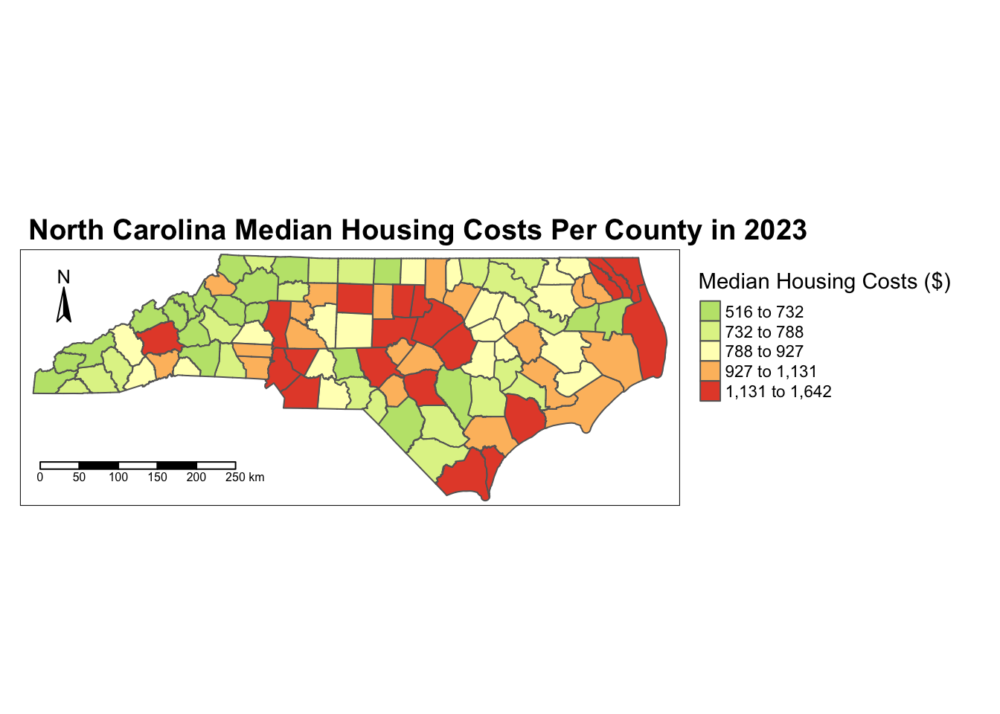
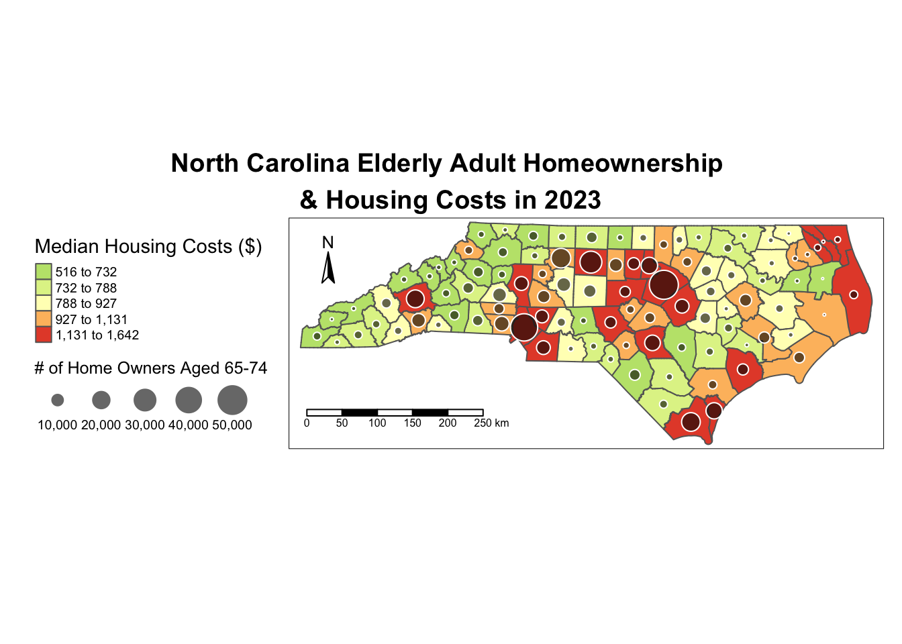
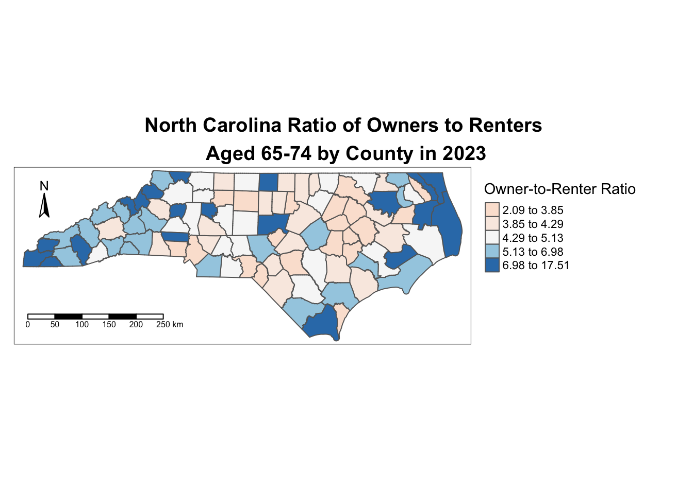

knitr::opts_chunk$set(echo = TRUE)Affordable housing is minimal in many parts of North Carolina. Specifically, the elderly population are increasingly at risk of displacement due to being on fixed incomes. I will be examining where our aging population who are owners and renters of homes are found across North Carolina and its relationship to median monthly housing costs in 2023.
Source: https://nciom.org/aging-with-dignity-in-north-carolina/
library(ggplot2)
library(tidycensus)
library(tmap)
library(tmaptools)
library(dplyr)
library(sf)
library(RColorBrewer)
library(classInt)
library(tidyverse)
library(cartography)
library(SpatialPosition)
library(maptiles)
library(terra)
library(potential)#census_api_key("f3d78e8619bc671c28d7a271bf415a2377086d51", install = TRUE)
# Using 2023 census data from American Community Survey 5 Year Data
v2023 <- load_variables(2023, "acs5", cache = FALSE)
# North Carolina's Median Monthly Housing Costs and Age 65-74 Owners and Renters
variables <- c(
MedianHouse = "B25105_001",
NCOwner65 = "B25007_009",
NCRenter65 = "B25007_019"
)
NCarolina <- get_acs(state = "NC", geography = "tract", variables = variables, geometry = TRUE, cb = FALSE)## Getting data from the 2019-2023 5-year ACS## Downloading feature geometry from the Census website. To cache shapefiles for use in future sessions, set `options(tigris_use_cache = TRUE)`.NCarolina1 <- NCarolina # easy to make changes without downloading census data multiple times
NCarolina1$variable <- as.factor(NCarolina1$variable) # make variables factors
#Group the variables by county tract and make each variable its own column
NCarolina1_wide <- NCarolina1 %>%
group_by(NAME, variable) %>%
summarise(
estimate = mean(estimate, na.rm = TRUE),
.groups = "drop"
) %>%
pivot_wider(
names_from = variable,
values_from = estimate,
values_fn = mean, # or first, if each combo is unique
values_fill = 0
)
# Split county tract variable to access just county name
NCarolina1_wide <- NCarolina1_wide %>%
mutate(
County = trimws(strsplit(NAME, ";") %>% sapply(`[`, 2)) # get 2nd item
)
# Grouping Tracts into County
NCarolina_county <- NCarolina1_wide %>%
group_by(County) %>%
summarize(
MedianHouse = mean(MedianHouse, na.rm = TRUE),
NCOwner65 = sum(NCOwner65, na.rm = TRUE),
NCRenter65 = sum(NCRenter65, na.rm = TRUE),
geometry = st_union(geometry),
.groups = "drop"
) %>%
st_as_sf() #make into spatial feature
head(NCarolina_county)## Simple feature collection with 6 features and 4 fields
## Geometry type: POLYGON
## Dimension: XY
## Bounding box: xmin: -82.08108 ymin: 34.80671 xmax: -79.2366 ymax: 36.58814
## Geodetic CRS: NAD83
## # A tibble: 6 × 5
## County MedianHouse NCOwner65 NCRenter65 geometry
## <chr> <dbl> <dbl> <dbl> <POLYGON [°]>
## 1 Alamance County 995. 8707 2208 ((-79.39252 35.8438, -79.38…
## 2 Alexander County 645 2573 273 ((-81.02985 35.89012, -81.0…
## 3 Alleghany County 741 1138 105 ((-81.15358 36.57008, -81.1…
## 4 Anson County 795. 1401 321 ((-80.17853 35.14996, -80.1…
## 5 Ashe County 725. 2011 340 ((-81.74193 36.41115, -81.7…
## 6 Avery County 673. 1334 173 ((-81.97563 36.20508, -81.9…tm_shape(NCarolina_county) +
tm_polygons(
col = "MedianHouse",
palette = "-RdYlGn",
style = "quantile",
border.col = NA,
title = "Median Housing Costs ($)"
) +
tm_layout(
legend.outside = TRUE,
legend.outside.position = "right",
main.title = "North Carolina Median Housing Costs Per County in 2023",
main.title.size = 1.2,
main.title.fontface = "bold"
) +
tm_compass(position = c("left", "top"), size = 1.5) +
tm_scale_bar(position = c("left", "bottom"))
From this visualization, we can see the median housing costs are generally higher on mid-east counties of the state.
# Centroid for the proportional symbol
NCarolina_centroids <- st_centroid(NCarolina_county)## Warning: st_centroid assumes attributes are constant over geometriestm_shape(NCarolina_county) + #Mean Housing Chloropleth
tm_polygons(
col = "MedianHouse",
palette = "-RdYlGn",
style = "quantile",
border.col = NA,
title = "Median Housing Costs ($)"
) +
tm_shape(NCarolina_centroids) + #Proportional Symbol
tm_symbols(
size = "NCOwner65",
col = "black",
alpha = 0.6,
scale = 1.5,
border.col = "white",
legend.size.show = TRUE,
title.size = "# of Home Owners Aged 65-74"
) +
tm_layout(
main.title = "North Carolina Elderly Adult Homeownership \n& Housing Costs in 2023",
main.title.position = c("center", "top"),
main.title.size = 1.2,
main.title.fontface = "bold",
outer.margins = c(0.1, 0.02, 0.02, 0.02),
legend.text.size = 0.61,
legend.outside = TRUE,
legend.outside.position = "left"
) +
tm_compass(position = c("left", "top"), size = 1.5) +
tm_scale_bar(position = c("left", "bottom"))
In the center of the state, the counties that are red with high median housing costs and high number of older home owners may face a higher risk of housing crisis. The west side of the state seems to have both less housing costs and elderly home owners.
# Create a logical flag for top 25% renter tracts
NCarolina_county <- NCarolina_county %>%
mutate(
OwnerRenterRatio = NCOwner65 / NCRenter65
)
tm_shape(NCarolina_county) +
tm_polygons(
col = "OwnerRenterRatio",
palette = "RdBu", # Red = more renters, Blue = more owners
style = "quantile", # Try "pretty" or "jenks" if it looks off
border.col = NA,
title = "Owner-to-Renter Ratio"
) +
tm_layout(
main.title = "North Carolina Ratio of Owners to Renters \nAged 65-74 by County in 2023",
main.title.position = c("center", "top"),
main.title.size = 1.2,
main.title.fontface = "bold",
outer.margins = c(0.1, 0.02, 0.02, 0.02),
legend.outside = TRUE,
legend.outside.position = "right"
) +
tm_compass(position = c("left", "top"), size = 1.5) +
tm_scale_bar(position = c("left", "bottom"))
It seems there are more elderly owners than renters in the areas on the edges of the states while the center is more renter heavier. Interestingly, the center of the state is where we saw the higher housing costs. This may explain why we find more elderly renters and more struggling elderly owners in these counties.
1. Discuss the advantages and challenges associated with an open data science approach. Provide an example based on this week’s reading. (1-2 paragraphs)
An advantage of the open data science approach is the increase in innovation and efficiency when data sets are able to be reused for new projects by new people. Kitchin (2013) discusses how useful big data has become in supplying detailed and low-cost data that can help promote the value of geography to a wider audience like Obama’s team collecting voter data before the election. With all this new data accessible, having an open data science approach can make big data even more powerful. This also helps data creators to reach broader audiences when data is openly shared as their information is more accessible. A challenge with the open data science approach is data quality issues. Kitchin (2013) explains how big data can make it difficult to extract useful and valid information from the data deluge of vast information. When there is so much data, it can be hard to discern what data is actually useful which is common in open data science approaches that leave you with too much information.
2. Create a markdown document that showcases an analysis of this week’s data or any other dataset of your choice. Include descriptive text that explains your analysis, and incorporate figures and geovisualizations.Include 1 chart and 1 map. Structure and explain your analysis with text, headings, highlights, images and other markdown basics.
For my maps, I chose to answer the research question: how do the mean housing costs and the aging population of home owners and renters in North Carolina inform us of the rising affordable housing crisis. I created a chloropleth map visualizing the mean housing costs in all the counties of North Carolina to get an understanding of which areas have higher housing costs. For the next map, I chose to create a proportional symbol map layered on top of the chloropleth map I previously made to showcase the number of aged 65-74 homeowners for each state in comparison to the mean housing cost level of that county. The specific steps I took to mitigate bias is I chose to classify the data by quantiles to ensure the data was represented as accurately as possible while differentiating between classes. The final map I created is a ratio of owners to renters aged 65-74 to visually understand what type of elderly population is more prevalent when concerned with hosuing costs in North Carolina counties. As a chloropleth map, this can be useful to easily point out the counties with more owners compared to renters to better inform the other maps about where housing costs being high is more of a problem. I minimized bias by calculating a ratio versus simply showing owners versus renters to normalize the data.